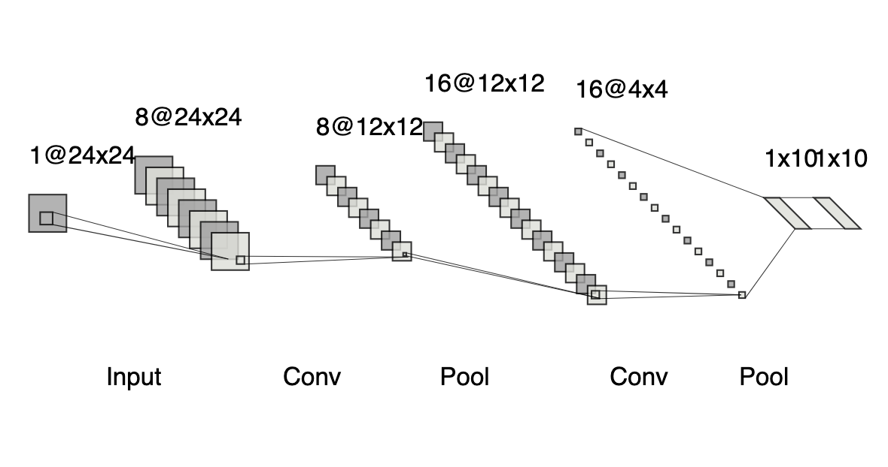

Desenhe no quadrado preto um digito de 0 a 9. Aperte o botão predizer e veja o resultado previsto para o digito desenhado. O gráfico de pizza representa qual a porcentagem para cada rótulo (qual digito) a rede computou. Via de regra, tomamos a maior probabilidade como a classificação final da rede.
Imagem enviada para a rede neural (24x24)
O que acontece quando o botão é apertado?
Assim que você aperta o botão algumas coisas acontecem:
A imagem que você desenhou é cortada para que o desenho que você faça ocupe todo o quadrado, removendo o espaço extra.
Em seguida a dimensão do desenho é reduzida para 24x24 pixels, pois a rede trabalha com imagens dessa dimensão apenas.
Finalmente, uma rede convolucional (exibida na imagem) roda no seu navegador e classifica o que você desenhou!
O seu desenho passa por 8 filtros (kernels) de dimensões 5x5x1 que geram uma imagem de 8 canais (24x24x8). Essa imagem passa por uma camada de pooling que reduz a dimensão para 12x12x8. Em seguida há mais uma etapa de convolução com filtros 5x5x8 que geram uma imagem de 16 canais (12x12x16). Mais uma camada de pooling que reduz a dimensão da imagem para 4x4x16. Por fim, a imagem 4x4x16 passa por uma camada completamente conexa (fully connected) com uma saída de 10 valores que são por fim passados para a função softmax que nos dá a probabilidade para cada digito.

Referências
Essa demonstração foi feita com base na biblioteca e sites desenvolvidos por Andrej Karpathy. O link para o site dele, outras fontes e referências úteis sobre aprendizado de máquina assim como o código fonte desse site seguem abaixo: